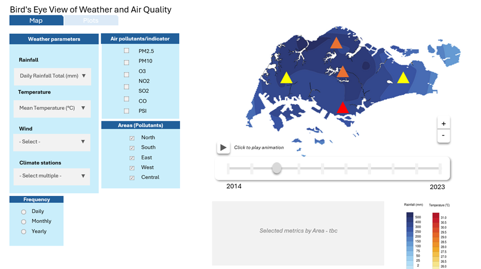
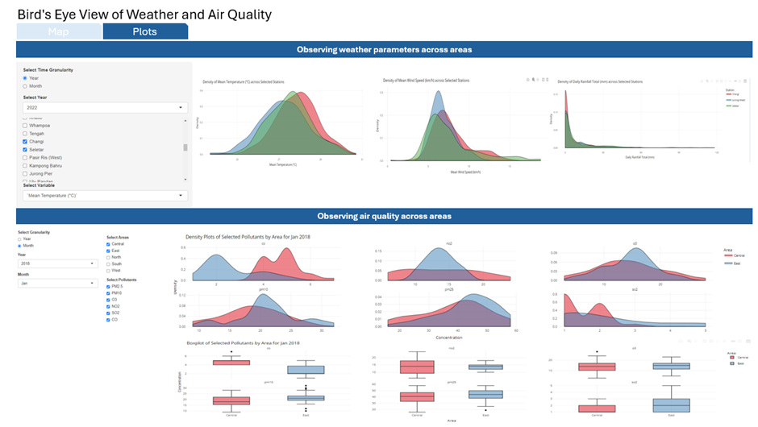
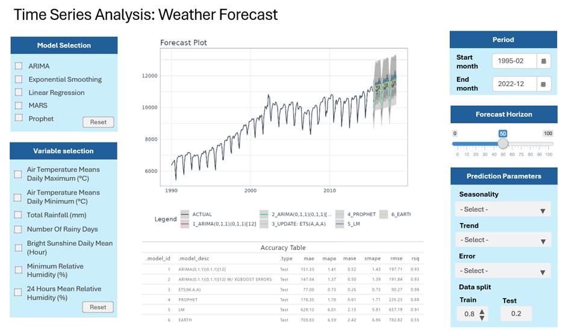
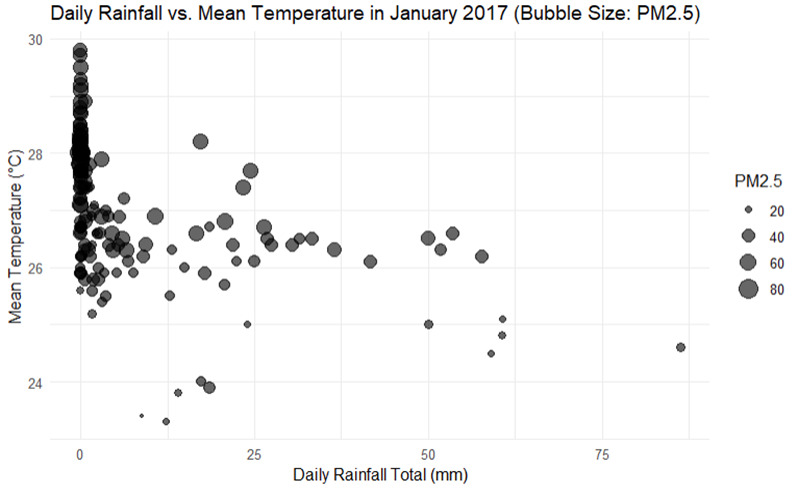
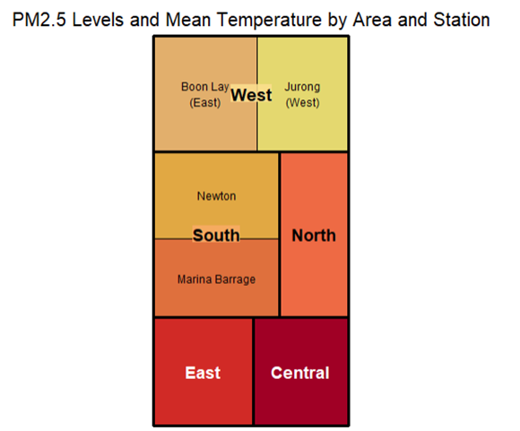

Proposal
AirWeather Analytics: A Visual Exploration Tool for Singapore’s Climate and Air Quality
Motivation
In Singapore, while there has been significant research on climate change, the relationship between changing weather patterns and air quality has not been thoroughly explored. While The National Environment Agency in Singapore has made historical weather and air quality data accessible, there remains a shortage of user-friendly tools to effectively visualize and analyze this data for a deeper understanding of its implications. Exploring these datasets within a visual analytics environment can provide valuable insights for various users, from policymakers to the general public.
The problems addressed
There are some visualizations made available by the government for climate trends and air quality through websites like Weather.gov.sg and the Haze Information Portal. However, these tools have some limitations:
The current tools predominantly feature basic, static visualizations fixed to specific timeframes, such as choropleth maps or maps with callouts. They lack interactivity that can display the spatial and temporal nature of the data across different areas in Singapore.
There are no available tools with advanced analytical functions, such as anomaly detection, time series analysis, and future projection. Users are limited in observing trends in climate or air quality.
Moreover, there is no integrated tool to explore, visualize and analyse the relationship between air pollutants and weather parameters (temperature, wind, and rainfall).
This project aims to overcome the identified problems by developing an intuitive and visual analytics tool that allows one to explore historical weather and air quality in Singapore.
Our solution
Using various R packages, we will analyse and visualize weather and air quality across different areas in Singapore and build an interactive R Shiny application. Users will be able to:
- Interactively explore customizable and dynamic visualizations that display weather and air quality data over time and across different regions in Singapore.
- Use selected analytical functions to highlight key patterns, identify anomalies, and make projections about future climate and air quality.
- Explore and visualize the interrelationship between various air pollutants and weather parameters like temperature, wind speed, and rainfall.
The data
The following datasets will be used:
| Dataset | Frequency | Period | Source |
|---|---|---|---|
Climate Historical Daily Records for various stations in Singapore (rainfall, temperature and wind speed) |
Daily | Period varies across stations but approx. 2014 – 2023 | http://www.weather.gov.sg/climate-historical-daily/ |
Air quality for 5 locations in Singapore (PM2.5, PM10, O3, NO2, SO2, CO, PSI) |
Daily | 2014 - 2023 | http://www.weather.gov.sg/climate-historical-daily/ |
Air Temperature And Sunshine, Relative Humidity And Rainfall (Changi climate station) |
Monthly | Jan 1975 – Dec 2023 | M890081_monthly_temp&rain_197501-202312.csv https://tablebuilder.singstat.gov.sg/table/TS/M890081 |
Approach and prototypes
1. Bird’s Eye View of Weather and Air Quality
This module will show dynamic, interactive map with option to include both weather and air quality data across 5 key areas in Singapore. Users will be able to select different time frames and regions for detailed examination.
Prototype Features:
Tab 1: Map
Interactive mapping tool with zoom and pan functions.
Layer selection for various weather and air quality parameters.
Time slider to view data across different historical periods.
Region-specific data display upon selection.

Tab 2: Plots
Options to select distribution plots for key weather parameters and pollutants by area, including density plots, histograms, and boxplots.
Comparative visualizations with side-by-side evaluations of multiple different areas or variables.
Customizable granularity to observe either monthly or yearly view of the data.

Following R packages will be used in this section:
tidyverse (CRAN - Package tidyverse (r-project.org)): An ecosystem of packages designed for data science that makes it easy to tidy, transform, and visualize data.
ggplot2 (CRAN - Package ggplot2 (r-project.org)): A powerful package for creating static, aesthetic, and informative graphics.
plotly (CRAN - Package plotly (r-project.org)): Provides a high-level interface to Plotly, enabling the creation of interactive and dynamic visualizations.
DT (CRAN - Package DT (r-project.org)): An interface to the JavaScript library DataTables, used to render interactive and rich data tables.
sf (CRAN - Package sf (r-project.org)): An R package for handling and analyzing spatial data with simple features, which can interface with leaflet for mapping.
2. Time-series Toolkit
This module enables users to forecast future climate conditions using historical data from 1975 to 2023. It offers interactive tools for model selection, prediction adjustments, and visualizes forecasts alongside historical data.
Prototype Features:
Model selection from a list of forecasting models (e.g., Linear Regression, ARIMA, Prophet) via checkbox
Flexible selection for variables, period, forecast horizon and prediction parameters.
Dynamic Prediction Charts to Visualize past trends and future projections.
Following R packages will be used in this section:
Lubridate (CRAN - Package lubridate (r-project.org)) : fast and user friendly parsing of date-time data, extraction and updating of components of a date-time
Timetk (CRAN - Package timetk (r-project.org)) : Easy visualization, wrangling, and feature engineering of time series data for forecasting and machine learning prediction.
Modeltime (CRAN - Package modeltime (r-project.org)) : Time series forecasting framework with models including ARIMA, Exponential Smoothing, and additional time series models from the ‘forecast’ and ‘prophet’ packages

3. Climate-Pollutant Relationship Explorer
This module would enable the user to select different types of plots and variables to be included in plots centered on exploring relationships. Below, we list some possible plots for such analysis:
Bubble Plot
This bubble plot, displaying the relationship between daily rainfall, mean temperature, and PM2.5 levels (represented by bubble size), provides a multidimensional view of the data. The plot allows a user to:
assess if there are any trends between rainfall and temperature
observe how air quality varies with different weather conditions. For example, days with higher rainfall has smaller bubbles (lower PM2.5 levels) in the plot below, suggesting that rain could help reduce air pollution.

Treemap
This treemap can convey both the PM2.5 pollution levels (through the size of the rectangles) and the mean temperature (through the color of the rectangles) across different areas and stations.
Note that only a small number of selected stations were grouped into different areas for this prototype
